第一章 函数与极限
初等数学的研究对象基本上是不变量，而高等数学的研究对象则是变动的量. 所谓函数关系就是变量之间的一种依赖关系，极限方法是研究变量的一种基本方法. 本章将介绍映射、函数、极限和函数的连续性等基本概念以及它们的一些性质.
第一节 映射与函数
映射是现代数学中的一个基本概念，而函数是微积分的研究对象，也是映射的一种. 本节主要介绍映射、函数及有关概念，函数的性质与运算等.
一、映射
1. 映射概念
设 $X, Y$ 是两个非空集合，如果存在一个法则 $f$，使得对 $X$ 中每个元素 $x$，按法则 $f$，在 $Y$ 中有唯一确定的元素 $y$ 与之对应，那么称 $f$ 为从 $X$ 到 $Y$ 的映射，记作
$$f: X \to Y$$
其中 $y$ 称为元素 $x$（在映射 $f$ 下）的像，并记作 $f(x)$，即
$$y = f(x)$$
而元素 $x$ 称为元素 $y$（在映射 $f$ 下）的一个原像；集合 $X$ 称为映射 $f$ 的定义域，记作 $D_f$，即 $D_f = X$；$X$ 中所有元素的像所组成的集合称为映射 $f$ 的值域，记作 $R_f$ 或 $f(X)$，即
$$R_f = f(X) = \{f(x) \mid x \in X\}$$
(1) 构成一个映射必须具备以下三个要素：集合 $X$，即定义域 $D_f = X$；集合 $Y$，即值域 $R_f \subset Y$ 的范围；对应法则 $f$，使得对每个 $x \in X$，有唯一确定的 $y = f(x)$ 与之对应.
(2) 对每个 $x \in X$，元素 $x$ 的像 $y$ 是唯一的；而对每个 $y \in R_f$，元素 $y$ 的原像不一定是唯一的；映射 $f$ 的值域 $R_f$ 是 $Y$ 的一个子集，即 $R_f \subset Y$，不一定 $R_f = Y$.
设 $f: \mathbf{R} \to \mathbf{R}$，对每个 $x \in \mathbf{R}$，$f(x) = x^2$. 显然，$f$ 是一个映射，$f$ 的定义域 $D_f = \mathbf{R}$，值域 $R_f = \{y \mid y \ge 0\}$，它是 $\mathbf{R}$ 的一个真子集. 对于 $R_f$ 中的元素 $y$，除 $y = 0$ 外，它的原像不是唯一的. 如 $y = 4$ 的原像就有 $x = 2$ 和 $x = -2$ 两个.
设 $X = \{(x, y) \mid x^2 + y^2 = 1\}$，$Y = \{(x, 0) \mid |x| \le 1\}$，$f: X \to Y$，对每个 $(x, y) \in X$，有唯一确定的 $(x, 0) \in Y$ 与之对应. 显然 $f$ 是一个映射，$f$ 的定义域 $D_f = X$，值域 $R_f = Y$. 在几何上，这个映射表示将平面上一个圆心在原点的单位圆周上的点投影到 $x$ 轴的区间 $[-1, 1]$ 上.
设 $f: [-\frac{\pi}{2}, \frac{\pi}{2}] \to [-1, 1]$，对每个 $x \in [-\frac{\pi}{2}, \frac{\pi}{2}]$，$f(x) = \sin x$. $f$ 是一个映射，其定义域 $D_f = [-\frac{\pi}{2}, \frac{\pi}{2}]$，值域 $R_f = [-1, 1]$.
设 $f$ 是从集合 $X$ 到集合 $Y$ 的映射：
- 若 $R_f = Y$，即 $Y$ 中任一元素 $y$ 都是 $X$ 中某元素的像，则称 $f$ 为从 $X$ 到 $Y$ 上的映射或满射；
- 若对 $X$ 中任意两个不同元素 $x_1 \ne x_2$，它们的像 $f(x_1) \ne f(x_2)$，则称 $f$ 为从 $X$ 到 $Y$ 的单射；
- 若映射 $f$ 既是单射，又是满射，则称 $f$ 为一一映射（或双射）.
在上面例 1 中的映射既非单射又非满射；例 2 中的映射不是单射，是满射；例 3 中的映射既是单射又是满射，因此是一一映射.
映射又称为算子. 从非空集合 $X$ 到数集 $Y$ 的映射又称为 $X$ 上的泛函；从非空集合 $X$ 到它自身的映射又称为 $X$ 上的变换；从实数集（或其子集）$X$ 到实数集 $Y$ 的映射通常称为定义在 $X$ 上的函数.
2. 逆映射与复合映射
设 $f$ 是 $X$ 到 $Y$ 的单射，则对每个 $y \in R_f$，有唯一的 $x \in X$，满足 $f(x) = y$. 于是可定义一个从 $R_f$ 到 $X$ 的新映射 $g$，即 $g: R_f \to X$. 对每个 $y \in R_f$，规定 $g(y) = x$. 这个映射 $g$ 称为 $f$ 的逆映射，记作 $f^{-1}$，其定义域 $D_{f^{-1}} = R_f$，值域 $R_{f^{-1}} = X$.
按上述定义，只有单射才存在逆映射. 例如例 3 中映射 $f(x) = \sin x$ 存在逆映射，即反正弦函数的主值：
$$f^{-1}(x) = \arcsin x, \quad x \in [-1, 1], \quad R_{f^{-1}} = [-\frac{\pi}{2}, \frac{\pi}{2}]$$
设有连个映射 $g: X \to Y_1, f: Y_2 \to Z$，其中 $Y_1 \subset Y_2$，则将每个 $x \in X$ 映射成 $f[g(x)] \in Z$，记作 $f \circ g$，称为复合映射：
$$(f \circ g)(x) = f[g(x)], \quad x \in X$$
设 $g: \mathbf{R} \to [-1, 1], g(x) = \sin x$；映射 $f: [-1, 1] \to [0, 1], f(u) = \sqrt{1 - u^2}$，则复合映射为：
$$(f \circ g)(x) = f[g(x)] = \sqrt{1 - \sin^2 x} = |\cos x|$$
二、函数
1. 函数的概念
设数集 $D \subset \mathbf{R}$，则称映射 $f: D \to \mathbf{R}$ 为定义在 $D$ 上的函数，通常简记为
$$y = f(x), \quad x \in D$$
其中 $x$ 称为自变量，$y$ 称为因变量，$D$ 称为定义域，记作 $D_f$，即 $D_f = D$. 函数值全体组成的集合称为值域：
$$R_f = f(D) = \{y \mid y = f(x), x \in D\}$$
构成函数的要素是：定义域 $D_f$ 及 对应法则 $f$. 如果两个函数的定义域相同，对应法则也相同，那么这两个函数就是相同的.
在坐标平面上，点集 $\{P(x, y) \mid y = f(x), x \in D\}$ 称为函数 $y = f(x)$ 的图形.
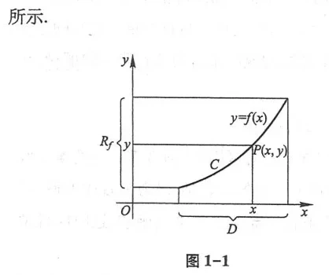
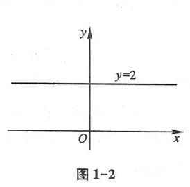
函数 $y = 2$ 的定义域 $D = (-\infty, +\infty)$，值域 $W = \{2\}$，图形是一条平行于 $x$ 轴的直线（如图 1-2 所示）.
函数 $$y = |x| = \begin{cases} -x, & x < 0 \\ x, & x \ge 0 \end{cases}$$，定义域 $D = (-\infty, +\infty)$，值域 $R_f = [0, +\infty)$，图形如图 1-3 所示.
函数 $$y = \operatorname{sgn} x = \begin{cases} -1, & x < 0 \\ 0, & x = 0 \\ 1, & x > 0 \end{cases}$$，定义域 $D = (-\infty, +\infty)$，值域 $R_f = \{-1, 0, 1\}$，图形如图 1-4 所示.
对于任何实数 $x$，恒有 $x = \operatorname{sgn} x \cdot |x|$.
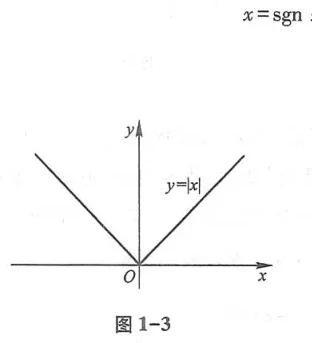
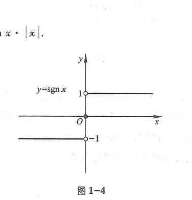
设 $x$ 为任一实数，不超过 $x$ 的最大整数称为 $x$ 的整数部分，记作 $[x]$. 函数 $y = [x]$ 的定义域为 $\mathbf{R}$，值域为 $\mathbf{Z}$，图形如图 1-5 所示.
函数 $$y = f(x) = \begin{cases} 2\sqrt{x}, & 0 \le x \le 1 \\ 1 + x, & x > 1 \end{cases}$$ 是一个分段函数，图形如图 1-6 所示.
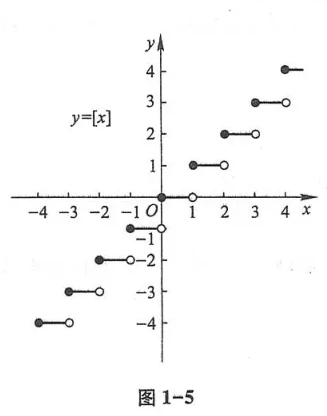
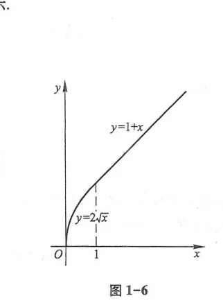
2. 函数的几种特性
设函数 $f(x)$ 的定义域为 $D$，$X \subset D$. 若存在数 $K_1$，使 $f(x) \le K_1$ 对任一 $x \in X$ 成立，则称 $f(x)$ 在 $X$ 上有上界；若存在数 $K_2$，使 $f(x) \ge K_2$ 成立，则称有下界.
若存在正数 $M$，使得对任一 $x \in X$，恒有 $|f(x)| \le M$，则称 $f(x)$ 在 $X$ 上有界. 充要条件是：它在 $X$ 上既有上界又有下界.
设函数 $y = f(x)$ 在区间 $I$ 上，对任意两点 $x_1 < x_2$：
- 恒有 $f(x_1) < f(x_2)$，则称函数在 $I$ 上是单调增加的（图 1-7）；
- 恒有 $f(x_1) > f(x_2)$，则称函数在 $I$ 上是单调减少的（图 1-8）.
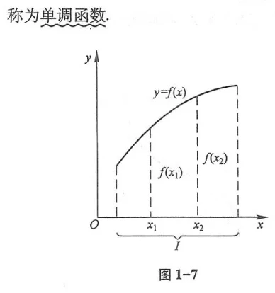
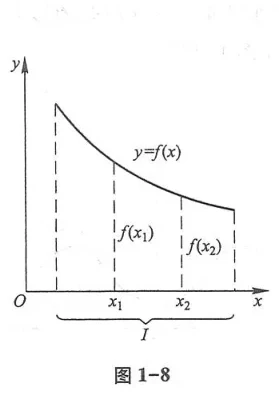
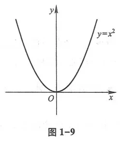
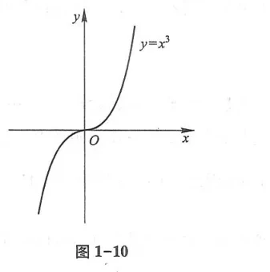
设 $f(x)$ 的定义域 $D$ 关于原点对称：
- 若 $f(-x) = f(x)$ 恒成立，则称 $f(x)$ 为偶函数，其图形关于 $y$ 轴对称（图 1-11）；
- 若 $f(-x) = -f(x)$ 恒成立，则称 $f(x)$ 为奇函数，其图形关于坐标原点对称（图 1-12）.
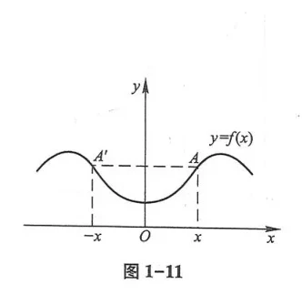
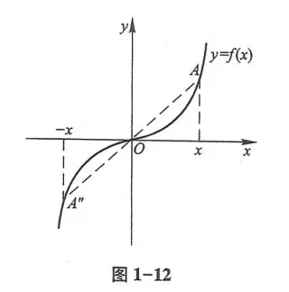
若存在非零常数 $l$，使对任一 $x \in D$，恒有 $f(x + l) = f(x)$，则称 $f(x)$ 为周期函数，$l$ 称为周期（通常指最小正周期）.
例如 $\sin x, \cos x$ 周期为 $2\pi$；$\tan x$ 周期为 $\pi$. 狄利克雷函数 $D(x)$ 无最小正周期.
3. 反函数与复合函数
若函数 $y = f(x)$ 在区间 $I$ 上单调增加（或单调减少），则它在区间 $I$ 上一定存在单调增加（或单调减少）的反函数 $y = f^{-1}(x)$.
直接函数 $y = f(x)$ 与其反函数 $y = f^{-1}(x)$ 的图形关于直线 $y = x$ 对称（如图 1-14 所示）.
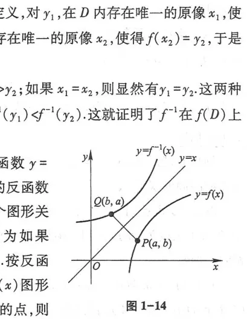
4. 初等函数与双曲函数
五大基本初等函数：幂函数 $y = x^\mu$、指数函数 $y = a^x$、对数函数 $y = \log_a x$、三角函数与反三角函数. 由它们经有限次四则运算与复合构成的函数称为初等函数.
双曲正弦：$\operatorname{sh} x = \frac{e^x - e^{-x}}{2}$； 双曲余弦：$\operatorname{ch} x = \frac{e^x + e^{-x}}{2}$； 双曲正切：$\operatorname{th} x = \frac{\operatorname{sh} x}{\operatorname{ch} x} = \frac{e^x - e^{-x}}{e^x + e^{-x}}$.
基本恒等式：$$\operatorname{ch}^2 x - \operatorname{sh}^2 x = 1, \quad \operatorname{sh} 2x = 2\operatorname{sh} x \operatorname{ch} x, \quad \operatorname{ch} 2x = \operatorname{ch}^2 x + \operatorname{sh}^2 x$$
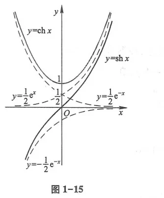
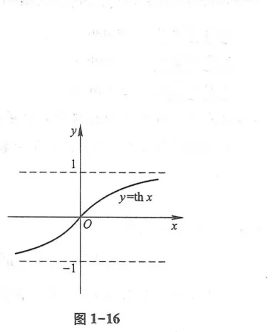
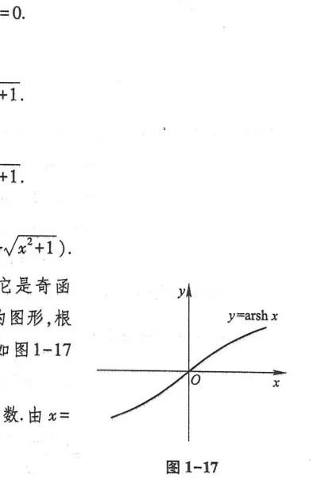
反双曲正弦：$y = \operatorname{arsh} x = \ln(x + \sqrt{x^2 + 1}), \quad x \in (-\infty, +\infty)$
反双曲余弦：$y = \operatorname{arch} x = \ln(x + \sqrt{x^2 - 1}), \quad x \ge 1$
反双曲正切：$y = \operatorname{arth} x = \frac{1}{2}\ln\frac{1 + x}{1 - x}, \quad |x| < 1$
习题 1-1
1. 求下列函数的自然定义域：
(1) $y = \frac{1}{\sqrt{x + 2}}$； (2) $y = \sqrt{4 - x^2}$； (3) $y = \ln(x - 1)$； (4) $y = \arcsin\frac{x - 1}{2}$.
2. 下列各组函数中，哪两个函数是相同的？为什么？
(1) $f(x) = x, g(x) = \sqrt{x^2}$； (2) $f(x) = \frac{x^2}{x}, g(x) = x$； (3) $f(x) = \sqrt{x - 1}\sqrt{x + 1}, g(x) = \sqrt{x^2 - 1}$.
3. 设 $f(x) = \frac{x - 1}{x + 1}$，求 $f(0), f(1), f(-x), f(x + 1), f(\frac{1}{x}), \frac{1}{f(x)}$.
4. 作出下列函数的图形：
(1) $y = |x - 2|$； (2) $y = \begin{cases} x, & x \le 0 \\ x^2, & x > 0 \end{cases}$； (3) $y = \operatorname{sgn}(x - 1)$.
5. 判断下列函数的奇偶性与单调性：
(1) $y = x^3 - x$； (2) $y = \ln(x + \sqrt{1 + x^2})$； (3) $y = \frac{e^x - e^{-x}}{e^x + e^{-x}}$.
第二节 数列的极限
一、数列极限的定义
如果在自然数集 $\mathbf{N}^*$ 与实数集之间存在一个对应法则，对于每一个正整数 $n$，都有唯一确定的实数 $x_n$ 与之对应，那么按次序排成的一列数：
$$x_1, x_2, x_3, \dots, x_n, \dots$$
称为数列，简记为 $\{x_n\}$，其中 $x_n$ 称为数列的通项（或一般项）.
设 $\{x_n\}$ 为一数列，$a$ 为常数. 如果对于任意给定的正数 $\varepsilon$（不论它多么小），总存在正整数 $N$，使得对于所有大于 $N$ 的项下标 $n$（即当 $n > N$ 时），不等式
$$|x_n - a| < \varepsilon$$
都恒成立，那么称常数 $a$ 是数列 $\{x_n\}$ 当 $n \to \infty$ 时的极限，并称数列 $\{x_n\}$ 收敛于 $a$，记作：
$$\lim_{n \to \infty} x_n = a \quad \text{或} \quad x_n \to a \quad (n \to \infty)$$
如果极限不存在，则称数列 $\{x_n\}$ 发散.
几何直观：不等式 $|x_n - a| < \varepsilon$ 等价于 $a - \varepsilon < x_n < a + \varepsilon$，即点 $x_n$ 落在以 $a$ 为中心、以 $\varepsilon$ 为半径的开邻域 $U(a, \varepsilon)$ 之内. 定义表明：不论邻域多么狭窄，只要从某一项 $N$ 之后，数列中所有的点 $x_n$ 无一例外全部掉入这个邻域之内，而邻域外面的点最多只有有限个（至多 $N$ 个）.
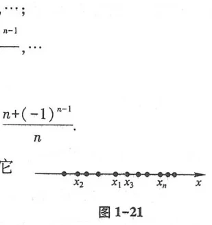
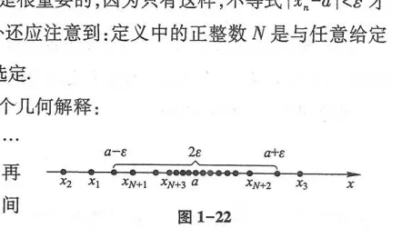
二、收敛数列的基本性质
- 唯一性：如果数列 $\{x_n\}$ 收敛，那么它的极限是唯一的；
- 有界性：如果数列 $\{x_n\}$ 收敛，那么数列 $\{x_n\}$ 必为有界数列（即存在正数 $M$，对一切 $n$ 有 $|x_n| \le M$）；
- 保号性：如果 $\lim_{n \to \infty} x_n = a$，且 $a > 0$（或 $a < 0$），则存在正整数 $N$，当 $n > N$ 时，恒有 $x_n > 0$（或 $x_n < 0$）；
- 子数列收敛性：如果数列 $\{x_n\}$ 收敛于 $a$，那么它的任何子数列 $\{x_{n_k}\}$ 也收敛于同一个极限 $a$.（常用于通过构造两个极限不等的子数列来证明原数列发散）.
第三节 函数的极限
一、自变量趋于有限值时函数的极限
设函数 $f(x)$ 在点 $x_0$ 的某个去心邻域 $\mathring{U}(x_0, \delta_0)$ 内有定义. 如果对于任意给定的正数 $\varepsilon$（不论它多么小），总存在正数 $\delta$ ($0 < \delta \le \delta_0$)，使得对适合不等式
$$0 < |x - x_0| < \delta$$
的一切 $x$，对应的函数值都满足：
$$|f(x) - A| < \varepsilon$$
那么常数 $A$ 称为函数 $f(x)$ 当 $x \to x_0$ 时的极限，记作 $\lim_{x \to x_0} f(x) = A$（图 1-23、图 1-24）.
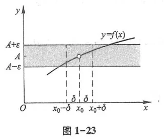
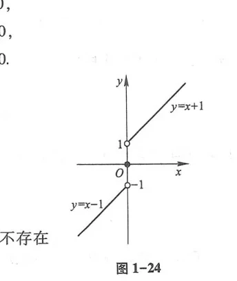
单侧极限：
- 左极限：$\lim_{x \to x_0^-} f(x) = f(x_0^-)$，限制自变量在 $x_0 - \delta < x < x_0$；
- 右极限：$\lim_{x \to x_0^+} f(x) = f(x_0^+)$，限制自变量在 $x_0 < x < x_0 + \delta$.
定理：$\lim_{x \to x_0} f(x) = A \iff f(x_0^-) = f(x_0^+) = A$.
二、自变量趋于无穷大时函数的极限
当 $x \to +\infty, x \to -\infty$ 或 $x \to \infty$ 时，若对任意 $\varepsilon > 0$，总存在大正数 $X$，当 $|x| > X$ 时恒有 $|f(x) - A| < \varepsilon$，记作 $\lim_{x \to \infty} f(x) = A$（图 1-25 至图 1-29）. 几何上，直线 $y = A$ 为曲线 $y = f(x)$ 的水平渐近线.
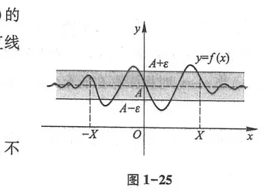
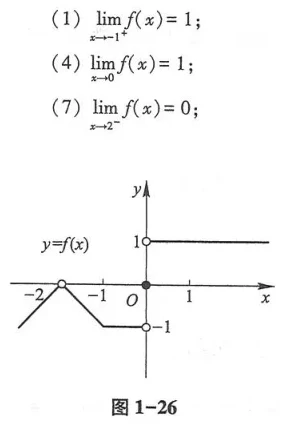
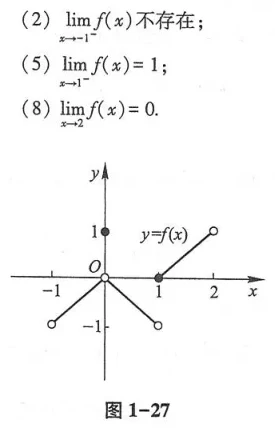
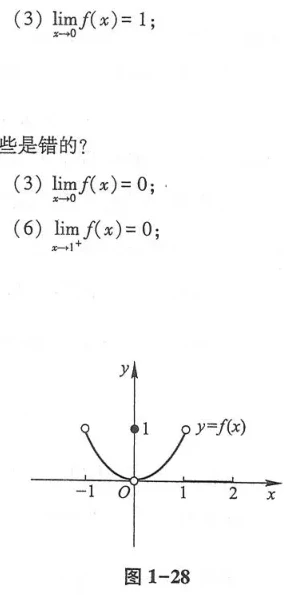
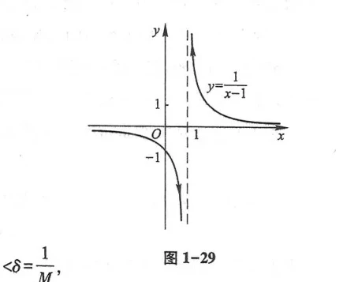
第四节与第五节 无穷小、无穷大与极限运算法则
如果函数 $\alpha(x)$ 当 $x \to x_0$ 时的极限等于零，称 $\alpha(x)$ 为当 $x \to x_0$ 时的无穷小量. 类似地，若 $|f(x)|$ 无限增大，则称 $f(x)$ 为无穷大量.
- $\lim f(x) = A \iff f(x) = A + \alpha(x)$（其中 $\alpha(x)$ 为无穷小）；
- 有限个无穷小的和与积仍为无穷小；有界函数与无穷小的积仍为无穷小；
- 四则运算法则：若 $\lim f(x) = A, \lim g(x) = B$，则 $\lim [f(x) \pm g(x)] = A \pm B, \lim [f(x)g(x)] = AB, \lim \frac{f(x)}{g(x)} = \frac{A}{B} \quad (B \ne 0)$.
第六节 极限存在准则 两个重要极限
一、夹逼准则与单调有界收敛准则
如果函数 $f(x), g(x), h(x)$ 在点 $x_0$ 的某去心邻域内满足 $g(x) \le f(x) \le h(x)$，且 $\lim_{x \to x_0} g(x) = \lim_{x \to x_0} h(x) = A$，那么必有 $\lim_{x \to x_0} f(x) = A$.
单调增加有上界（或单调减少有下界）的数列必有极限.
二、两个重要极限
1. 第一个重要极限：$\lim_{x \to 0} \frac{\sin x}{x} = 1$
在单位圆中（图 1-30、图 1-31），设圆心角为 $x \in (0, \frac{\pi}{2})$. 比较 $\triangle OAB$ 面积、扇形 $OAB$ 面积与 $\triangle OAC$ 面积：
$$\frac{1}{2}\sin x < \frac{1}{2}x < \frac{1}{2}\tan x \quad \implies \quad \cos x < \frac{\sin x}{x} < 1$$
由夹逼准则，当 $x \to 0$ 时 $\cos x \to 1$，故得证.
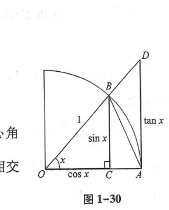
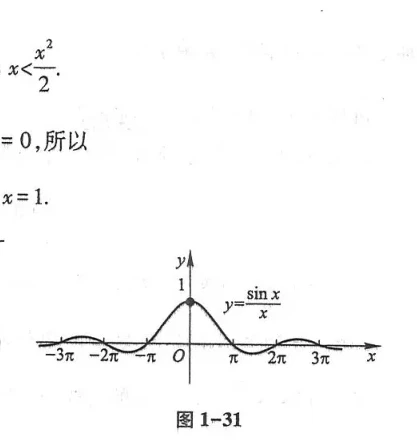
2. 第二个重要极限：$\lim_{x \to \infty} \left(1 + \frac{1}{x}\right)^x = e$
利用单调有界准则证明数列 $x_n = (1 + \frac{1}{n})^n$ 单调递增且有上界 $3$（图 1-32），收敛极限记为欧拉自然常数 $e \approx 2.718281828459...$ 等价形式：$\lim_{\alpha \to 0} (1 + \alpha)^{\frac{1}{\alpha}} = e$.
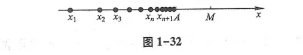
第七节 无穷小的比较
设 $\alpha, \beta$ 是自变量同一趋向下的无穷小，且 $\beta \ne 0$：
- 若 $\lim \frac{\alpha}{\beta} = 0$，称 $\alpha$ 是比 $\beta$ 高阶的无穷小，记作 $\alpha = o(\beta)$；
- 若 $\lim \frac{\alpha}{\beta} = \infty$，称 $\alpha$ 是比 $\beta$ 低阶的无穷小；
- 若 $\lim \frac{\alpha}{\beta} = c \ne 0$，称 $\alpha$ 与 $\beta$ 是同阶无穷小；若 $c = 1$，称 $\alpha$ 与 $\beta$ 是等价无穷小，记作 $\alpha \sim \beta$.
常用等价无穷小（当 $x \to 0$ 时）：
$$\sin x \sim x, \quad \tan x \sim x, \quad \arcsin x \sim x, \quad \arctan x \sim x, \quad 1 - \cos x \sim \frac{1}{2}x^2$$
$$e^x - 1 \sim x, \quad \ln(1 + x) \sim x, \quad (1 + x)^\alpha - 1 \sim \alpha x$$
第八节与第九节 函数的连续性与间断点
一、连续性的定义
若 $\lim_{\Delta x \to 0} \Delta y = \lim_{\Delta x \to 0}[f(x_0 + \Delta x) - f(x_0)] = 0$，即 $\lim_{x \to x_0} f(x) = f(x_0)$，则称函数在点 $x_0$ 处连续（图 1-33）.
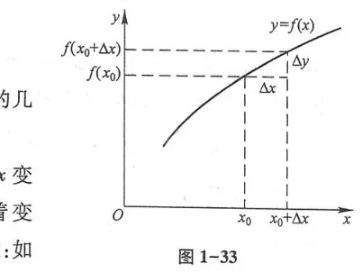
二、函数的间断点及其分类
如果函数在点 $x_0$ 处不连续，称 $x_0$ 为函数的间断点（图 1-34 至图 1-39）：
- 第一类间断点（左、右极限都存在）：
- 可去间断点：$f(x_0^-) = f(x_0^+) \ne f(x_0)$（图 1-36、图 1-37）；
- 跳跃间断点：$f(x_0^-) \ne f(x_0^+)$（图 1-38）.
- 第二类间断点（左、右极限中至少有一个不存在）：
- 无穷间断点：极限趋于无穷大（图 1-34）；
- 振荡间断点：如 $y = \sin\frac{1}{x}$ 当 $x \to 0$ 时在 $[-1, 1]$ 之间无限振荡（图 1-35）.
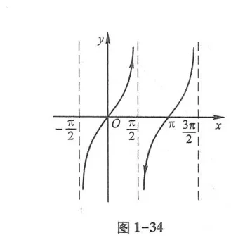
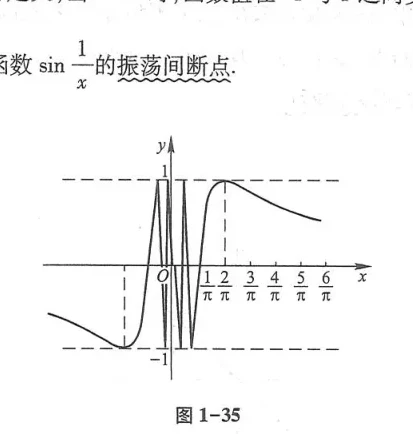
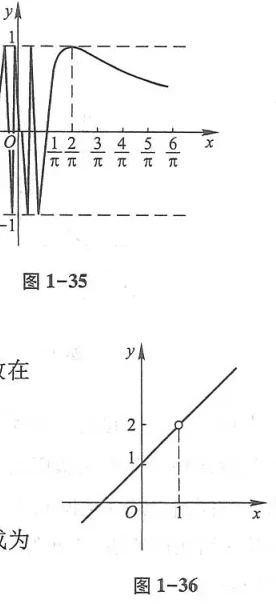
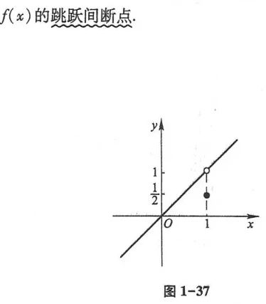
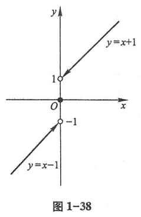
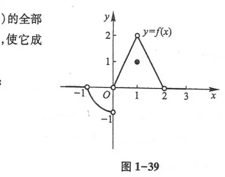
第十节 闭区间上连续函数的性质
- 有界性与最大值最小值定理：在闭区间 $[a, b]$ 上连续的函数必在该区间上有界，且必能取得它的最大值 $M$ 和最小值 $m$（图 1-40）；
- 介值定理：设 $f(x)$ 在闭区间 $[a, b]$ 上连续，且 $f(a) \ne f(b)$. 那么对于介于 $f(a)$ 与 $f(b)$ 之间的任一实数 $C$，在开区间 $(a, b)$ 内至少存在一点 $\xi$，使得 $f(\xi) = C$（图 1-41）；
- 零点定理：设 $f(x)$ 在闭区间 $[a, b]$ 上连续，且端点异号 $f(a) \cdot f(b) < 0$，则在开区间 $(a, b)$ 内至少存在一点 $\xi$，使得 $f(\xi) = 0$（即方程 $f(x) = 0$ 在 $(a, b)$ 内至少有一个实根，图 1-42、图 1-43）.
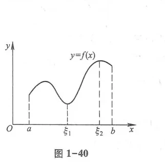
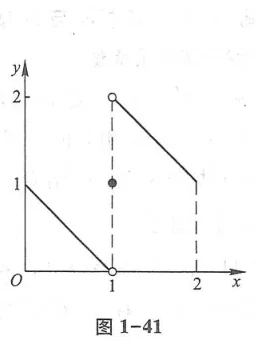
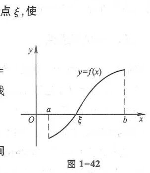
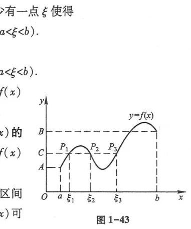
总习题一
1. 求极限：$\lim_{x \to 0} \frac{\sqrt{1 + x\sin x} - \cos x}{x^2}$.
解：分子加上 1 减去 1 拆项：
$\lim_{x \to 0} \frac{(\sqrt{1 + x\sin x} - 1) + (1 - \cos x)}{x^2} = \lim_{x \to 0} \frac{\frac{1}{2}x\sin x + \frac{1}{2}x^2}{x^2} = \frac{1}{2} + \frac{1}{2} = 1$.
2. 设函数 $f(x) = \begin{cases} \frac{\ln(1 + ax)}{x}, & x > 0 \\ b, & x = 0 \\ \frac{\sin 2x}{x}, & x < 0 \end{cases}$ 在 $x = 0$ 处连续，求常数 $a$ 和 $b$.
解：计算单侧极限：
$f(0^+) = \lim_{x \to 0^+} \frac{\ln(1 + ax)}{x} = a$；
$f(0^-) = \lim_{x \to 0^-} \frac{\sin 2x}{x} = 2$；
因 $f(x)$ 在 $x = 0$ 处连续，$f(0^+) = f(0^-) = f(0) = b \implies a = 2, b = 2$.
3. 证明方程 $x = a\sin x + b$ ($a > 0, b > 0$) 至少有一个不超过 $a + b$ 的正实根.
证：设 $F(x) = x - a\sin x - b$. $F(x)$ 在 $[0, a + b]$ 上连续.
$F(0) = -b < 0$；
$F(a + b) = a + b - a\sin(a + b) - b = a(1 - \sin(a + b)) \ge 0$.
由零点定理，必存在 $\xi \in (0, a + b]$ 使得 $F(\xi) = 0$，即得证.